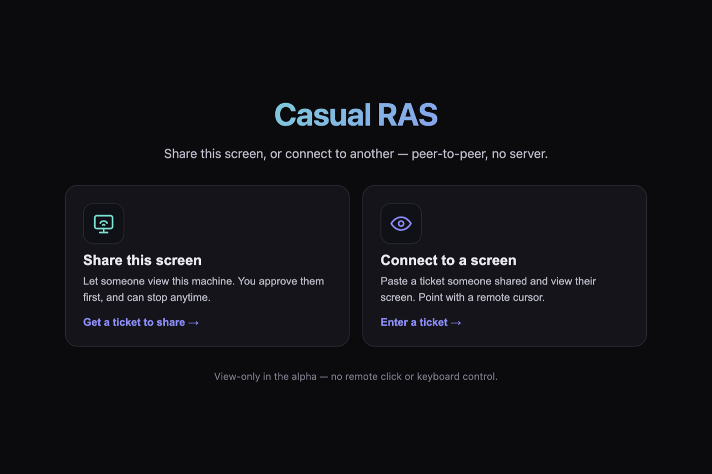
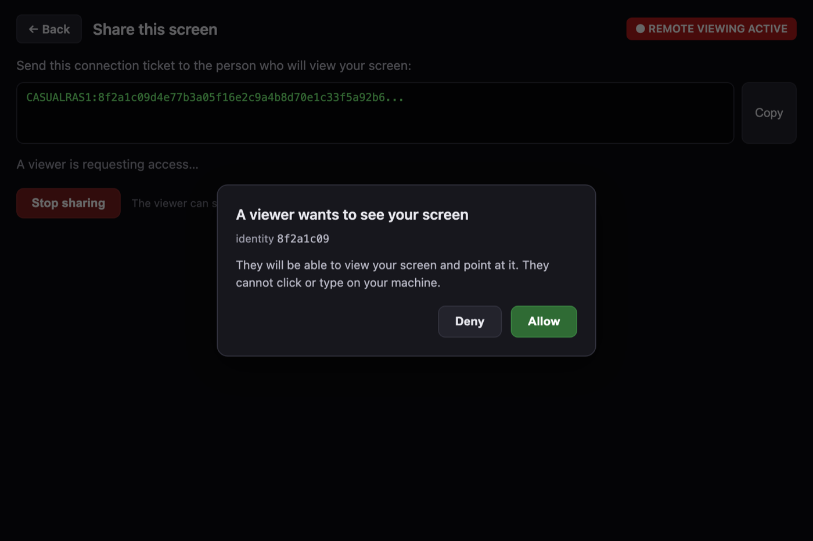

Under your brand
White-label by design. Your UI, your flow, your support workflow — Casual RAS is the engine underneath.
Alpha · Open source · Apache-2.0
Casual RAS is an embeddable remote-access engine for consent-based screen viewing and collaborative remote pointers — under your own brand, workflow and authorization model.

See it working
Share a connection ticket, approve the viewer, and they see your screen — with your cursor guiding them. No account, no server in the middle.

Why embed it
Your users stay inside your product, under your brand and support workflow — no redirect to a third-party remote-desktop app.
White-label by design. Your UI, your flow, your support workflow — Casual RAS is the engine underneath.
The local user approves every session before any pixels are sent, and can stop it at any moment.
Direct peer-to-peer connections for the MVP, with an encrypted relay fallback. No server of yours in the path.
A shared Rust core with clean seams; the SDK boundary (C ABI + Node.js) is drawn around the proven crates.
How consent works
Built for
Let support agents see a customer’s screen without a screen-share tool switch.
Managed-service and internal-IT support with consent and a clear stop control.
Local, explicit consent on every session for privacy-sensitive workflows.
Guide a user through their own device with a visible remote pointer.
Multiple visible pointers for pairing, review and walkthroughs (roadmap).
Platform support
One app, both roles. Viewing works everywhere; sharing is macOS-first while the other capture backends are built.
| Capability | Status |
|---|---|
| macOS screen sharing | Alpha |
| macOS / Linux / Windows viewing | Alpha |
| Remote visual pointer | Alpha |
| Keyboard & mouse control | Not available |
| Linux & Windows sharing | Planned |
| Signed grants & capability leases | Planned |
| C ABI & Node.js SDK | Planned |
| Tamper-evident audit | Planned |
Security model
Our engineering priorities, in order: security first, responsiveness second, interface richness third. When they conflict, the higher one wins.
Encryption secures the pipe; permission is decided by the host, not the transport. A viewer requests — it never self-authorizes.
A stalled video never freezes the viewer’s own pointer or the stop control. Latency beats interface richness by design.
Active viewing is always visible and the stop control is always present. The product build cannot even link a “skip consent” path.
Roadmap
The full design, the shared Rust core, and validation of the low-latency video path and macOS capture/encode.
One app that shares or views over real peer-to-peer connections, with a connection-ticket flow, real local consent, and a remote pointer.
Screen-sharing backends for Linux and Windows, then signed grants and fine-grained capability leases.
The embeddable SDK (C ABI + Node.js), tamper-evident audit, an on-device fraud-friction subsystem, and signed release builds.
Get it
Open source under Apache-2.0. Build from source today; tagged installers publish to GitHub Releases.
git clone https://github.com/CasualOffice/RASystem
cd RASystem/app/src-tauri
cargo runOpens the app — choose Share this screen or Connect to a screen. macOS first-run asks for Screen Recording permission.
Tagged releases build macOS .dmg, Linux .AppImage/.deb, and Windows installers via CI. Builds are unsigned in the alpha (right-click → Open on macOS).
Technical details